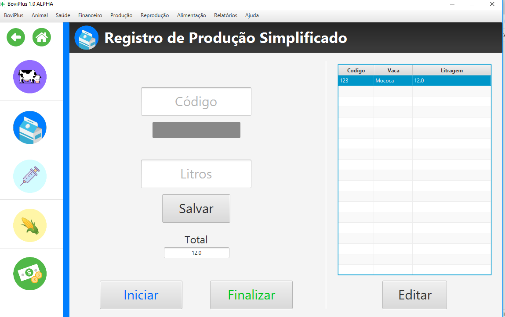

Registro de produção simplificado
No modulo de produção são apresentadas três formas de cadastro de produção você pode usar a que mais
gostar. Todas as formas de cadastro trabalham com produção diária, ou seja toda produção inserida em um
dia será somada com a produção daquele dia já salva, se esta existir.
Nesse registro existe um processo onde o sistema salva a ordem em que você inseriu os dados de produção
da ultima vez, na primeira vez que usar essa tela, não haverá essa ordem, então deve ser inseridos o
código do animal, lembrando que o sistema irá salvar a ordem que está sendo inserido, então será
carregado o nome do animal, e após pode ser inserido a produção do animal e clicar no botão salvar,
após salvar o animal será inserido na lista ao lado direito da tela, deve ser repetido o processo para
todos os animais em lactação.

Após a segunda vez de utilizar essa forma de registro, ou seja já existe uma ordem armazenada,
automatiza o processo de preenchimento automático do código do animal seguindo a ordem anterior, basta
clicar no botão Iniciar no canto inferior esquerdo da tela.
Em seguida será carregada a primeira vaca da lista basta iserir a produção e clicar em salvar.
Após salvar o sistema já irá carregar o próximo
animal da lista.
O processo é repetido para todos os animais da lista.
Após cadastrar a produção dos
animais deve clicar no botão finalizar para salvar a produção.
Se necessário alterar o valor da produção de uma produção de animal cadastrado basta seleciona-lo e clicar no botão “Alterar” e alterar o valor no campo da produção e clicar em salvar.
Quando todos os dados estiverem pronto clique em finalizar.